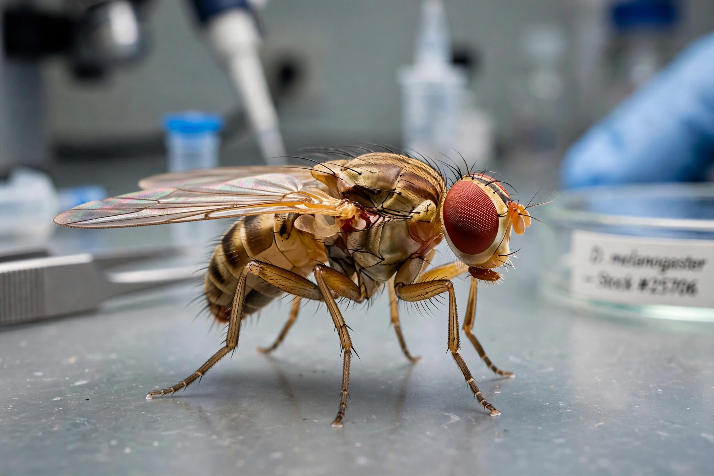

Drosophila melanogaster is a species of fly (order Diptera) in the family Drosophilidae, commonly known as the common fruit fly or vinegar fly. The species is one of the most widely used model organisms in genetics, developmental biology, physiology and evolution.

| Kingdom | Animalia |
|---|---|
| Order | Diptera |
| Family | Drosophilidae |
| Species | D. melanogaster Meigen, 1830 |
Thomas Hunt Morgan began using it around 1910 at Columbia University; his 'fly room' established that genes lie on chromosomes, earning the 1933 Nobel Prize. Advantages include a ~10-day life cycle at 25°C, four pairs of chromosomes, a fully sequenced genome (~14,000 genes, sequenced in 2000), and powerful genetic tools such as balancer chromosomes and the GAL4/UAS system.
Adults are about 2.5 mm long, tan with red eyes; males are smaller with a dark abdomen tip. Females lay ~400 eggs on fermenting fruit. Development proceeds through larval instars and a pupal stage with complete metamorphosis. About 75% of known human disease genes have a match in the fly genome, making it valuable for studying diseases including cancer and neurodegeneration.